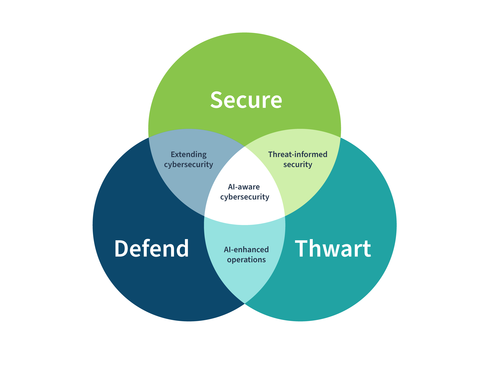
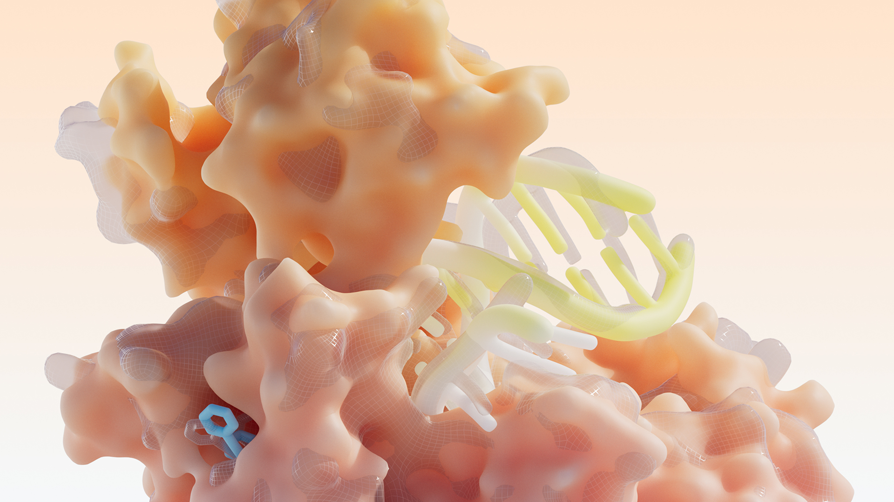

SuuJiKat AI Daily
AI 今天的共同信号：Agent 进入“基础设施叙事”，安全与资金开始配套
2026-05-13 · AIGC 今日观察
今天的三条线索看起来分散：百度在 Create2026 把“AI Infra / Agent Infra”推到台前，NIST 把 AI 安全往可落地的控制项与框架映射上推，而 Isomorphic Labs 的 21 亿美元融资把“AI 做药”从概念赛道推向平台赛道。
把它们放在一起看，会看到一个更清晰的转向：
AI 的下一阶段，不只是更会做事，而是更像“可部署的系统”：有基建、有安全控制项、有长期资本。
今日目录
01｜百度 Create2026 今日开幕：把“Agent Infra”摆到台前
02｜NIST：把 AI 安全做成“可映射、可复用”的控制项
03｜Isomorphic Labs：21 亿美元融资，把“AI 做药”推向平台竞赛
01｜百度 Create2026 今日开幕：把“Agent Infra”摆到台前
图：新华网报道配图（Create2026 官方视觉）。
新华网 4 月 9 日报道，Create2026 百度 AI 开发者大会将于 5 月 13 日至 14 日在北京举办，并提到百度智能云将在 AI Infra 与 Agent Infra 两个方向实现重大突破，并携多款全新产品亮相。
SuuJiKat 判断
“Agent Infra”这四个字上台，意味着百度想把竞争从“模型能力”拉回“系统可交付”。
开发者真正卡住的，越来越不是“有没有一个更强的模型”，而是：能不能把 agent 放进组织流程；能不能稳定调用工具、拿到权限、跑完任务、可观测、可审计；能不能用一套基础设施去规模化复制这些能力。
所以把 Infra 与 Agent Infra 作为核心看点，本质是在讲：从 demo 走向规模化落地，需要一套能被企业采购的基础设施叙事。
来源：新华网报道
02｜NIST：把 AI 安全做成“可映射、可复用”的控制项

图：NIST 官方图示（Cyber AI Profile focus areas）。
Federal News Network 报道称，NIST 正在把既有的安全控制体系（如 SP 800-53）做成面向 AI 的 overlay，并考虑基于 NIST Cybersecurity Framework（CSF）构建 “Cyber AI profile”，把组织熟悉的安全框架继续沿用到 AI 系统上。
SuuJiKat 判断
真正有用的 AI 安全，不是“多写一份原则”，而是把控制项变成能落地的工程清单。
当 agent 开始“能做事”，风险会变成权限、工具调用与数据读写边界；事故发生后能不能追溯与审计；安全团队能不能用熟悉框架快速评估与落地。
NIST 这种“把 AI 安全拉回控制项与框架映射”的做法，是 AI 从实验走向组织级部署的必要条件：可复用、可审计，才能规模化。
💡 Overlay：在既有控制/标准之上加一层“针对特定场景的标注与增强”，让组织不用推倒重来也能落地新要求。
来源：Federal News Network（图示见 NIST 图片页）
03｜Isomorphic Labs：21 亿美元融资，把“AI 做药”推向平台竞赛

图：Isomorphic Labs 官网文章配图。
Isomorphic Labs 在官方公告中表示，公司完成 21 亿美元 B 轮融资，领投方为 Thrive Capital，参投包含 Alphabet、GV 以及 MGX、Temasek、CapitalG、UK Sovereign AI Fund 等；资金用于扩展其 AI 药物设计引擎、全球扩张并推进候选药物管线。
SuuJiKat 判断
AI 做药正在从“模型能力故事”变成“工程与管线故事”。
这类融资的关键，不在于“AI 能不能提出一个分子”，而在于能不能把它变成一套可重复的系统能力：持续生成候选、筛选、迭代；能被药企合作与内部管线复用；能把研发周期压缩到可被临床验证的节奏。
当 AI 真要进入真实世界，资本会优先押注“能跑长期工程”的平台化组织。
今天的一个判断
AI 的下一阶段，会越来越像“基础设施 + 安全控制项 + 资本耐心”的组合拳。
选择工具时，不要只问“它生成得好不好”，还要问：它能不能进入流程、跑完任务、留下可复用工作流？它有没有把安全与权限做成可控开关？它背后是不是一个能长期迭代、持续交付的系统？
来源
1) https://www.news.cn/info/20260409/87fe6f81bf094881a3ca3e91614ce829/c.html
2) https://federalnewsnetwork.com/federal-insights/2026/05/heres-how-nist-is-teeing-up-guidance-for-securing-ai/
3) https://www.nist.gov/image/relationship-between-cyber-ai-profile-focus-areas
4) https://www.isomorphiclabs.com/articles/isomorphic-labs-announces-series-b-investment-round
5) https://www.marketwatch.com/story/google-ai-legend-raises-big-money-for-startup-targeting-this-cutting-edge-goal-27699b0c